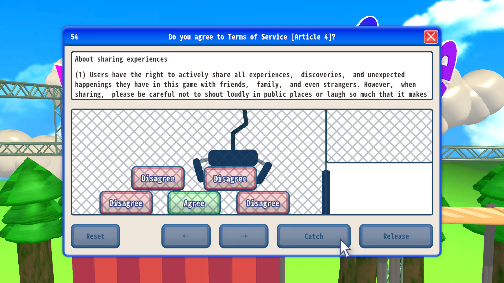

El título original es 利用規約に同意したい, que viene a significar algo así como «quiero aceptar los términos de uso». Fuera de Japón se le conoce como Agreeee y ni siquiera sé cómo se pronuncia, pero ha sido un viaje al averno sin billete de vuelta. Si eres del tipo de persona que disfruta poniendo a prueba su propia paciencia hasta romperla, amigo mío, este es tu juego.
La premisa, tal y como aparece en su página de Steam, es tan simple como aceptar doce términos y condiciones. Ya solo con eso podéis sospechar que algo bizarro esconde. Cada aceptación es en realidad un puzle que se niega a dejarse resolver por las buenas, y el juego se dedica a inventar formas cada vez más retorcidas de impedir que llegues al botón de aceptar. Está hecho por psicópatas para psicópatas.

La hora que se convirtió en cinco
Evidentemente, el desarrollador tenía que ser japonés y, como no podía ser de otra manera, me lo tuvo que recomendar y regalar un amigo. El peor regalo que me han hecho jamás, por cierto. «Yo imagino que te costará en torno a una hora», me decía. Casi cinco horas estuve con el jueguito. No solo eso, sino que me hice el cien por cien sin querer.
Vale, sí, ya me lo he pasado y desinstalado. Pero ¿y a mí ahora quién me devuelve el tiempo y la cordura? Exijo justicia. Como curiosidad tiene su gracia y hay ingenio detrás de algunos de los doce pasos, pero no hay música, no hay narrativa y no hay nada que sostenga las horas que acaba exigiendo. Es un chiste de un minuto estirado hasta la extenuación.
Lo mejor
- La premisa es tan absurda que engancha por pura curiosidad.
- Algunos de los doce pasos esconden ideas realmente ingeniosas.
Lo peor
- Pone a prueba la paciencia hasta un punto que raya lo hostil.
- Se vende como cosa de una hora y se va fácilmente a cinco.
- No hay música ni narrativa que acompañen al conjunto.
Desglose de puntuación
Veredicto
Un chiste de un minuto estirado hasta las cinco horas. Tiene ingenio suelto, pero exige mucha más paciencia de la que devuelve.